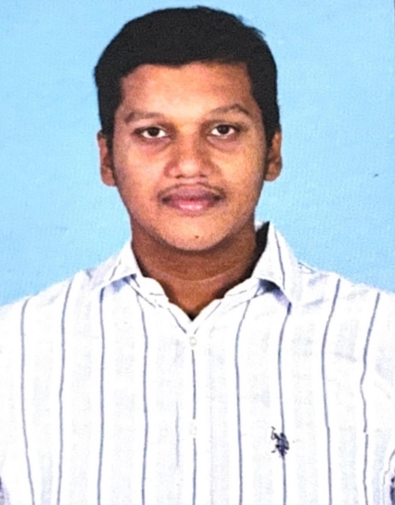

Computer Science Engineering Student | Data Science Enthusiast | Python Developer | Future Software Engineer
Projects
Internships
CGPA
I am Mandeep Kunasani, a Computer Science and Engineering student at SRM Institute of Science and Technology, Chennai. I am passionate about Artificial Intelligence, Data Science, Machine Learning, Software Development and Web Technologies. Through internships, technical projects, volunteering activities, and leadership opportunities, I continuously work on enhancing my technical expertise and problem-solving skills. My goal is to become a skilled Software Engineer and contribute to innovative technology solutions that create real-world impact.
Bachelor of Technology (B.Tech)
Computer Science and Engineering
Duration : 2024 - 2028
Current CGPA : 8.7 / 10
Status : Pursuing
Board of Intermediate Education
Duration : 2022 - 2024
Percentage : 85%
Status : Completed
Board of Secondary Education
Duration : 2021 - 2022
Percentage : 92%
Status : Completed
Python, C, C++, JavaScript, SQL
HTML, CSS, JavaScript, Responsive Web Design
Data Analysis, Data Visualization, Machine Learning, Artificial Intelligence
Supervised Learning, Classification Models, Prediction Models, Natural Language Processing
SQL, MySQL, Database Design
Git, GitHub, VS Code, PyCharm, Jupyter Notebook
Leadership, Team Collaboration, Communication, Problem Solving, Time Management
SmartVisionPlus is my flagship Artificial Intelligence project focused on intelligent image understanding and smart automation. The project demonstrates Machine Learning, Computer Vision, Artificial Intelligence, and real-world problem solving.
Location-based service application developed using Python. Features include weather integration, Google Maps support, location search, current location detection, search history and nearby services discovery.
Intelligent resume screening and analysis platform utilizing Artificial Intelligence techniques for evaluating resumes and generating insights.
Complete hospital administration platform designed for patient record management, appointments, healthcare services and administration workflows.
Digital legal management system developed for efficient handling of court records, case tracking and judicial workflows.
Enterprise Resource Planning platform designed to streamline organizational operations and resource management.
Bioinformatics project developed for DNA sequence comparison and matching using computational analysis techniques.
AI-powered news summarization application designed to extract key insights from lengthy news articles.
Machine Learning based content moderation system capable of detecting harmful and offensive content.
Titanic Survival Prediction, Food Label Analyser, Exam Portal, Smart Campus Resource Management, AI-based Academic Projects and several Data Science applications.
Worked on Data Science, Machine Learning, Data Analytics, Artificial Intelligence, and real-world problem-solving projects.
Gained experience in Frontend Development, Web Design, Responsive Websites, and modern web technologies.
Successfully completed multiple internship programs and technical training sessions in Data Science, Artificial Intelligence, Machine Learning and Web Development.
Represented TechNGlobal as a Campus Ambassador, promoting technical initiatives and student engagement activities within the university community.
Received a Letter of Recommendation for outstanding contribution and participation.
Served as a Fundraising Volunteer, supporting social impact initiatives and community development programs.
Contributed as a Fundraising Volunteer and participated in awareness and outreach activities.
Selected for multiple functional roles including: